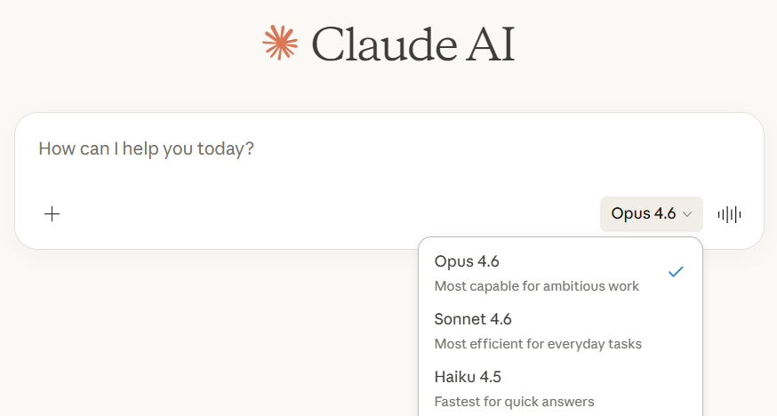

Getting Started with Claude
[A brief introductory sentence that describes what this guide covers and who it's for. Keep it to two or three lines.]
April 2026
"Claude" is both a model and a product.
You can think of modelsLarge Language Model (LLM)A family of state-of-the-art AI systems trained on broad data to understand and generate human language. Claude's models (Opus, Sonnet, Haiku) differ in capability, speed, and cost.Source: Anthropic docs as the brains and productsProductA user-facing application built on top of one or more models. Each product (Claude.ai, Claude Code, Cowork) provides a different interface and toolset for interacting with the underlying AI.Source: Anthropic as the hands and feet. Models are the Artificial Intelligence itself, each with different tradeoffs between capability and speed. Products are the workspaces that give those models different tools to work with.

The model was trained on the internet, then learned to be helpful, then stopped.
A model is a neural networkNeural networkA structure made of billions of simple units (called neurons) linked by connections. Each connection carries a numerical value called a weight that controls how strongly one unit influences another. Training adjusts these weights until the network produces useful, coherent language.Think of it like tuning billions of tiny dials until the system gets the answers right. that was trainedTrainingTraining happens in two stages. First, pre-training: the model reads enormous amounts of text from the internet (books, articles, websites, code) and learns patterns in language, facts, and reasoning. Then, post-training: it learns to follow instructions, answer questions helpfully, and have conversations.Pre-training gives it knowledge; post-training teaches it how to use that knowledge well. on massive amounts of text from the internet, then taught to follow instructions and have conversations. Once training ends, the model has a knowledge cutoffKnowledge cutoffThe date when the model's training data ends. The model has no awareness of events, discoveries, or changes that happened after this date.It is like asking someone who went off the grid on that date. date, meaning it has no awareness of events after its training data ends. The model you use is the same model everyone else uses. It does not learn from your conversations, carry memories between sessions, or improve the more you use it. What you can change is the context you give it in each conversation.
The model does not see things like we do. It breaks text, audio, video, and images into tokensTokenA small chunk of text, roughly one word or word-fragment. The model reads and generates text one token at a time. Everything (text, code, images) gets converted to tokens.Think of tokens as the model's alphabet. – small chunks, each corresponding to an ID in the model's vocabulary. Your question, any documents you attach, and every word the model writes back all count as tokens. This is why some things that seem trivial to us, like counting dots in a message, can trip it up – it can only see these tokens. Together these tokens make up the model's context.
Every conversation, the model starts with a fresh context window.
Every conversation with Claude happens inside a context windowContext WindowA fixed-size container (measured in tokens) that holds everything the model can see in one conversation. When it fills up, older content is dropped.Think of it as the model's short-term working memory. – a fixed-size container that holds your messages, Claude's replies, uploaded files, and any background instructions, all at once. When the window fills up, older content is dropped and the model has no way to retrieve it. As tokens pile up, costs rise and performance degrades (sometimes called "context rot"). The practical insight is that system promptsSystem PromptHidden instructions sent to the model by the product or platform before your conversation begins. They shape Claude's tone, rules, and behavior without being visible to you.Every Claude product has one; they vary widely., CLAUDE.md files, and project instructions are not magic features – they are simply text loaded into the window before you type your first message. There are several ways to get information in, from simple copy-paste to file uploads to automated connectorsMCP (Model Context Protocol)An open standard that lets Claude reach into external systems like SharePoint, Slack, Google Drive, Jira, and databases. Called "connectors" in the Claude.ai interface; in Claude Code, you configure them as MCP servers.Think of it as giving Claude permission to look things up on your behalf. that pull data from tools like Slack or SharePoint. No matter the method, the result is the same: tokens in the context window.
Tools that bring outside information into the context window
With the right context, models can work together to automate complex work.
In the first section you learned that Claude has three models with different strengths. In Claude Code, a single task can use all three at once. Opus plans the work and makes judgment calls. Haiku handles high-volume scanning where speed matters more than depth. Sonnet does the detailed analysis in between. Each agentAgentAn independent Claude instance spun up by an orchestrator to handle a specific sub-task. Each agent gets its own context window, runs a model matched to the difficulty of its job, and returns only a summary when it finishes.Think of agents as specialists on a project team, each briefed separately. gets its own context window, so no single conversation overflows.
Claude Code example
"Audit this project folder – find all deprecated API calls, analyze each one, and produce a migration plan."
Try it. Set up Claude Code and build something.
To set up Claude Code on Windows, copy the prompt below and paste in Claude.ai. Claude will guide you from there, one step at a time.